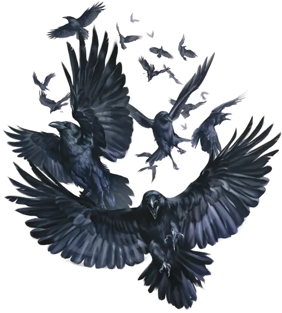

Рой воронов
Swarm of Ravens
Средний рой крошечных Зверей, без мировоззрения

Класс Защиты 12 Инициатива +2 (12)
Хиты 11 (2к8 + 2)
Скорость 10 футов, Полёта 50 футов
| мод | спас | ||
|---|---|---|---|
| СИЛ | 6 | −2 | −2 |
| ЛОВ | 14 | +2 | +2 |
| ТЕЛ | 12 | +1 | +1 |
| мод | спас | ||
|---|---|---|---|
| ИНТ | 5 | −3 | −3 |
| МДР | 12 | +1 | +1 |
| ХАР | 6 | −2 | −2 |
Сопротивление урону Дробящий, Колющий, Рубящий
Иммунитеты Испуганный, Окаменевший, Опрокинутый, Опутанный, Очарованный, Ошеломлённый, Парализованный, Схваченный
Чувства пассивное Восприятие 15
Языки нет
Опасность 1/4 (50 опыта; БВ +2)
Особенности
Рой. Рой может занимать пространство другого существа и наоборот, а также рой может проходить через отверстия, которые достаточно велики для Крошечного ворона. Рой не может восстанавливать Хиты или получать Временные хиты.
Действия
Клювы. Бросок рукопашной атаки: +4, досягаемость 5 фт. Попадание: 5 (1к6 + 2) Колющего урона, или 2 (1к4) Колющего урона если рой Окровавлен.
Какофония (Перезарядка 6). Спасбросок Мудрости: Сл 10, одно существо в пространстве роя. Провал: Цель получает состояния Оглохший до начала следующего хода роя. Оглохшая таким образом цель совершает с Помехой проверки характеристик и броски атаки.
Бонус мастерства +2